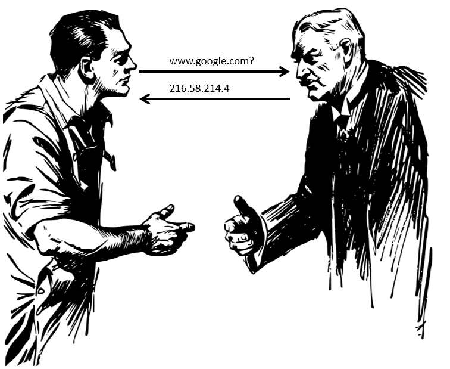
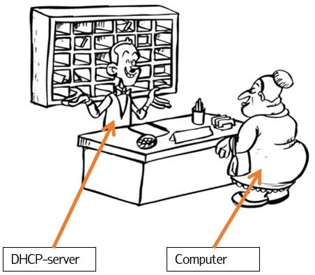
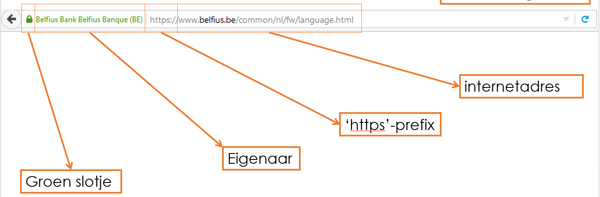

Computernetwerken - Software
Deze materialen zijn gemaakt voor 4 TSO Handel
De online oefeningen zijn te vinden door op de knop "Oefeningen Servers" te klikken. Veel succes!
In de vorige les bespraken we de hardware die nodig is om twee computers met elkaar te laten communiceren. Naast hardware (routers, switches, …) is er uiteraard ook nood aan software (verschillende programma’s). Zonder software krijgt de computer wel signalen binnen maar heeft die geen idee wat hij ermee moet aanvangen.
DNS
Wanneer je in de adresbalk 217.148.93.140 intypt kom je op de site van SmartSchool terecht. Merk op dat de adresbalk ook is aangepast naar https://www.smartschool.be. Wat kan jij het gemakkelijkst onthouden, de nummercombinatie of het webadres? Inderdaad, het webadres is veel gemakkelijker om te onthouden. Je computer maakt voor jou de vertaalslag naar het IP-adres (zie verder), het gebruikt hiervoor de DNS-server.
DNS-Server
De DNS-server is een grote databank die webadressen (bv: www.google.com) vertaalt naar een IP-adres. Dit is hieronder symbolisch weergegeven. De rechtse man (met snor) is de DNS-server. IP-adressen
Wanneer computers met elkaar willen communiceren hebben ze een adres nodig. Men noemt dit het IP-adres. Elke computer heeft een uniek adres. Je kan het vergelijken met de post. Elk huis / appartement heeft een eigen uniek adres. Op die manier weet de postbode waar hij de brief moet afleveren. Typ in het startmenu ‘cmd’. Selecteer de eerste mogelijkheid die verschijnt. Een zwart scherm met witte letters zal openen. Hierin typ je het commando ‘ipconfig’. Je krijgt nu een hele hoop informatie te zien. Per adapter staat er extra informatie.
Opdrachten
- Zoek naar de Ethernet adapter. Zoek naar IPv4-Adres. Noteer de cijfercombinatie hieronder. Je kan deze vinden achter het dubbelpunt.
- Kan je ook een IPv6-Adres vinden? Indien ja, noteer de cijfer en letter combinatie hieronder. Je kan deze opnieuw vinden achter het dubbele punt.
- Vergelijk de info met die van je buur. Wat valt je op?
Versies
Er bestaan twee versies van het IP-adres: IPv4 en IPv6. IPv4 is veel korter en bestaat uit vier keer een getal tussen 0 en 255 en wordt onderscheiden door een punt. Een IPv6 daarentegen bestaat uit cijfers (0 tot 9) en letters (a-f). Elke combinatie wordt onderscheiden door een dubbelepunt. In de tabel hieronder zie je twee de verschillende versies.| IPv4 | 192.168.0.5 |
| IPv6 | 2001:0db8:85a3:08d3:1319:8a2e:0370:7344 |
DHCP
De kans is klein dat je zelf het IP-adres hebt opgegeven. Het IP-adres is vooraf gespecifieerd. De DHCP-server heeft deze taak op zich genomen. Wanneer er een computer in het netwerk actief wordt, deelt hij het adres uit. Je kan het vergelijken met op hotel gaan. De toerist (=computer) komt in het hotel en wil een kamer (= het netwerk). Hij gaat hiervoor naar de balie van het hotel, waar hij een sleutel (= IP-adres) krijgt van de receptionist (= DHCP-server). De kans is groot dat de volgende keer een andere sleutel wordt toegewezen. Dit is ook het geval bij een DHCP-server.
Zelf een IP-adres ingeven
Wat moet je doen als er zich geen DHCP-server in het netwerk bevindt? Zonder IP-adres kan je niet op het netwerk, aangezien er geen IP-adres wordt uitgedeeld door de DHCP-server moet je het zelf doen. Hoe ga je te werk?
- Klik op het icoontje van het netwerk onderaan de taakbalk.
- Kies voor netwerkcentrum openen.
- Indien je verbonden bent met de kabel klik je op ‘LAN-verbinding’. Ben je verbonden via WiFi? Klik dan op ‘Draadloze verbinding’.
- In het nieuwe venster klik je op ‘Eigenschappen’. Opgelet, je hebt hiervoor administrator-machtigingen nodig!
- Selecteer ‘Internet Protocol versie 4 (TCP/IPv4)’ en klik vervolgens opnieuw voor ‘Eigenschappen’.
- Opnieuw opent zich een nieuw venster, hierin kies je voor de optie om zelf een IP-adres in te geven.
- Geef ook een DNS-server in (Waarom?). De DNS-servers van Google zijn 8.8.8.8 en 8.8.4.4 8. Klik op OK. Doe dit ook voor het ander venster.
Oefeningen
Tijd voor oefeningen!
Klik hier voor oefeningen over de leerstof: DNS, DHCP en IP-adressen.Veilig op het net
Aangezien het internet wereldwijd is, kunnen veel mensen het gebruiken. Jammer genoeg zijn daar ook mensen bij met slechte bedoelingen. Ze zijn uit op wachtwoorden, geld en/of persoonlijke gegevens. Sommige aanvallen kan je tegenhouden met specifieke programma’s, tegen anderen sta je volledig machteloos.
HTTP versus HTTPS
Wanneer je naar een website surft, vult je browser het webadres automatisch aan met ‘http://’. http staat voor HyperText Transfer Protocol en zorgt ervoor dat websites kunnen worden doorgegeven van de server naar de browser. Deze verbinding is echter niet beveiligd, en dus kan iedereen meeluisteren. Wanneer je bankgegevens of wachtwoorden intypt kan dit desastreuse gevolgen hebben. Om dit probleem op te lossen is men op de proppen gekomen met https, waarbij de s staat voor ‘secure’ (veilig). Hierbij is het onmogelijk om af te luisteren aangezien er tussen de server en de browser een soort van tunnel wordt opgebouwd.
Hoe ben ik verbonden?
De volgende vier kenmerken geven aan dat je veilig bent verbonden: 
Firewall
Naast het gebruik van https, kan je ook een Firewall gebruiken. Een firewall inspecteert elk bericht dat via het internet een netwerk binnenkomt. Indien het bericht er veilig uit ziet, wordt het doorgestuurd in het netwerk. Wanneer dit niet het geval is, wordt het tegengehouden. Ook Windows heeft per computer een firewall. Je kan eenvoudig de status ervan controleren in het configuratiescherm.
Soorten servers
Lees hieronder de tekst. Nadien maak je hier de oefeningen.